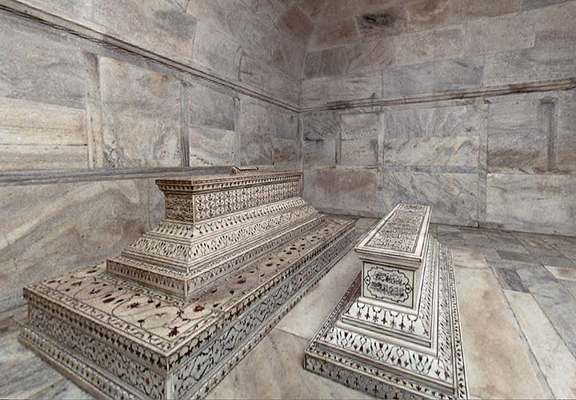

타지마할(힌디어: ताज महल, 우르두어: تاج محل, 페르시아어: تاج محل)은 인도 아그라에 위치한 무굴 제국의 대표적 건축물이다. 무굴 제국의 황제 샤 자한이 자신의 총애하였던 부인 뭄타즈 마할로 알려진 아르주망 바누 베굼을 기리기 위하여 1632년에 무덤 건축을 명하여 2만여 명이 넘는 노동자를 동원하여 건설하였다. 건축의 총 책임자는 우스타드 아마드 로하리로 알려져 있고, 뭄타즈 마할이 죽은지 6개월 후부터 건설을 시작하여 완공에 22년이 걸렸다.
피사의 사탑(이탈리아어: Torre di Pisa)은 이탈리아 서부 토스카나주의 피사에 있는 피사 대성당의 종루(鐘樓)로, 기울어진 탑으로 유명하다. 1173년 8월 9일 착공 시에는 수직이었으나, 13세기에 들어 탑의 기울어짐이 발견되었다. 높이는 지상으로부터 55m, 계단은 297개로 이루어졌으며, 무게는 14,453t이다. 지반에 가해지는 평균 응력은 50.7tf/m2란 계산 결과가 나왔다. 현재의 기울기의 각도는 약 5.5도이고 기울기의 진행은 여러 차례의 보수공사로 멈추었다. 흔히 중세의 세계 7대 불가사의 중 하나로 불리고 있다.
사그라다 파밀리아 성당(카탈루냐어: Temple Expiatori de la Sagrada Família, 스페인어: Templo Expiatorio de la Sagrada Familia)은 스페인 바르셀로나에 짓고 있는 로마 가톨릭 성당이다. 또한 '사그라다'는 스페인어로 신성한 또는 성스러운이라는 뜻을 가졌으며, 파밀리아는 가족을 뜻하기 때문에 성가족성당이라고도 불린다. 카탈루냐 출신의 건축가 안토니 가우디가 설계하고 직접 건축을 책임졌다. 이 건물에 대한 가우디의 작업은 유네스코 세계 문화 유산의 일부이며, 2010년 11월 교황 베네딕토 16세는 성당에서 준 대성당으로 승격을 선포했다. 1882년 성당의 건축은 Francisco de Paula del Villar에 의해 시작되었다. 1883년 비야르가 사임하자 가우디가 수석 건축가로 취임하여 고딕 건축 양식과 아르누보 양식을 결합한 건축 및 엔지니어링 스타일로 프로젝트를 변형시켰다.
성 바실리 대성당(러시아어: Храм Василия Блаженного)은 모스크바의 붉은 광장에 있는 러시아 정교회 성당이다. 그 당시 모스크바 대공국의 대공이었던 이반 4세가 러시아에서 카잔 칸을 몰아낸 것을 기념하며 봉헌한 성당이다. 1555년 건축을 시작하여 1561년 완공하였다. 1600년에 이반 대제의 종탑이 완공되기 전까지는 러시아에서 가장 높은 건축물이기도 하였다.
페라리 월드 아부다비(영어: Ferrari World Abu Dhabi, 아랍어: عالم فيراري)는 아랍에미리트 아부다비 야스 섬에 위치한 페라리 관련 실내 테마파크이다. 야스 섬의 베이사이드 리조트 종합 개발 사업의 일환으로 조성이 진행되어 2010년 11월 4일에 오픈했다. 부지는 아부다비 그랑프리가 열리는 야스 마리나 서킷의 제7 코너 (헤어핀 코너) 관람석 맞은 편에 있다. 삼각형의 붉은 지붕은 페라리 GT 카의 보디 측면에서 볼 수 있는 전통적인 이중 곡선을 모티브로 하고 있으며, 최고 높이는 48 미터이다.
댄포스 유니버스 (Danfoss Universe)는 창립자의 집과 댄포스 본부 옆의 노르 보그 (Nordborg)의 농업 경관에 묻혀있는 덴마크 과학 공원입니다. 2005 년 5 월에 개장했으며 상당한 성공을 거두면서 이미 확대되고 있습니다. 댄포스 유니버스 2 단계 마스터 플랜에는 전시실 (Curiosity.Center)과 레스토랑 (Food.Factory)이 포함되어 있습니다.이 레스토랑은 전시 및 과학 실험을위한 공간을 동봉하여 여름에 야외 공원을 겨울 개월 동안 연장합니다.
빌바오 구겐하임 미술관(스페인어: Museo Guggenheim Bilbao)은 스페인 바스크 지방 빌바오에 있는 근현대 미술관이다. 구겐하임 재단은 뉴욕뿐만 아니라 전 세계에 구겐하임 미술관을 설립하여 국제적 연결을 늘리고 있다. 빌바오 뿐만 아니라 베네치아, 베를린 등에도 있다. 프랭크 게리가 설계하였으며 1997년 개장하였다. 미술관의 건립이 도시 재생에서 핵심적인 역할을 했다고 평가받으며, 이후 이와 같이 상징문화시설을 통해 도시재생효과를 얻는 것을 빌바오 효과라 칭하게 되었다.
도쿄 스카이 트리는 일본 도쿄도 스미다구에 세워진 전파탑이다. 본래 높이 610.58m로 계획되었으나 2009년 10월에 높이 634 m로 설계가 변경되어, 캐나다의 CN 타워와 중국의 광저우타워를 제치고 세계에서 가장 높은 자립식 전파탑이 되었다. 도부 철도의 미사용 화물역 부지를 재개발해 지었으며, 따라서 기존에 설치되었던 도부 철도의 도쿄 스카이트리역(구 나리하리바시역)이 스카이트리에 직접 연결되어 있다.